Using iBeacons
iBeacons are blutooth devices that broadcast their information (position…) so that bluetooth aware devices (like smartphones, Raspberry Pi…) are able to detect them and get their information.
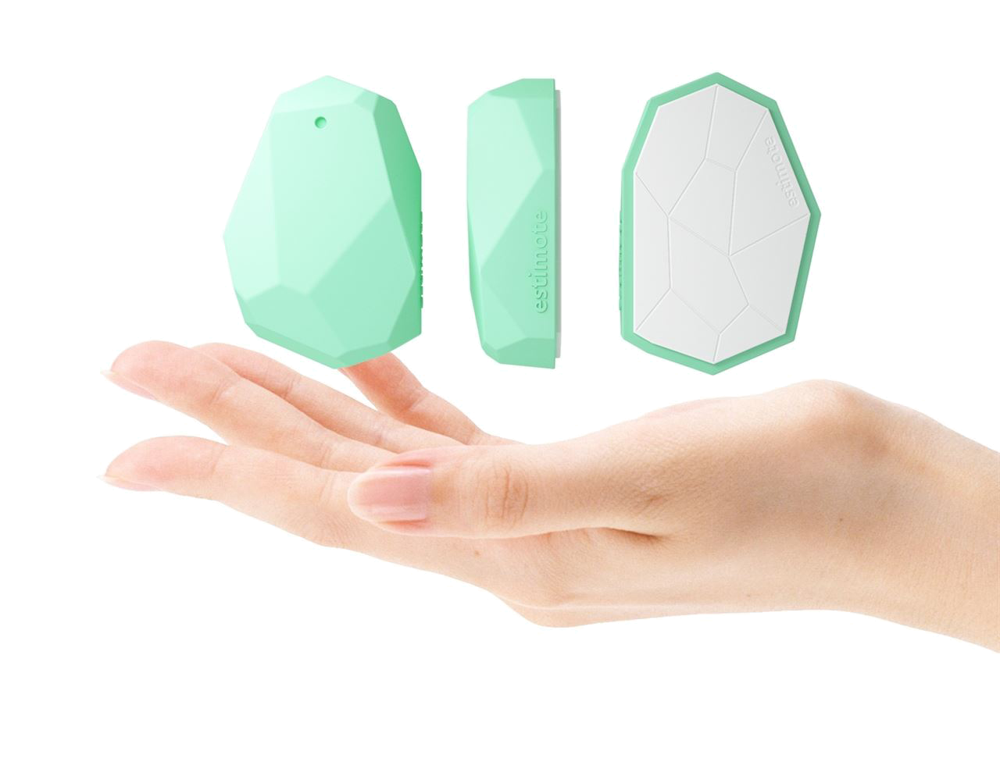
Learn more on Wikipedia (https://en.wikipedia.org/wiki/IBeacon).
In this tutorial, we show how to get the distance of an Estimote beacon (http://estimote.com) from the Pi.
What to do with beacons
Some ideas:
- Put a beacon in the bag of your kid and get an email when he comes back from school
- Trigger some security when you go far your desk
- Add a beacon to an important key and lights up a red light while the key is not back
Install Beacon software
Some software is needed in Node-RED to communicate with the Pi.
To install it :
- Use the menu import / node

- type ttb-ibeacon in the dialog box.

- Wait for the install
- Then reboot and then refresh the web browser page.
Check the palette (using the filter). The iBeacon node should be present:
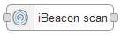
Scan beacons around
Build that simple flow. It will scan around and create a node for each found beacon:
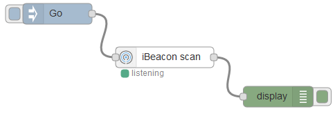
When you click “Go”, one node per beacon will be added to the workspace. The big number on it is some identifier.
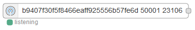
Use a beacon node
Double click it to change its name to something better (we suppose here that the beacon is wrapped to the cat), then add a Go and Display node:
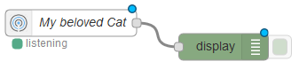
Do not forget to activate (with the button with the same name). The blue bullets will then disappear.
Then the display tab gets filled with
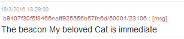
There is one line each time the beacon sends a position information (quite often).
The message on the flow contains more information: use a debug node instead of the display to see the distance in meter into the payload:
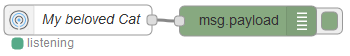
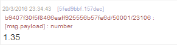
The debug node also allows to see the complete msg:
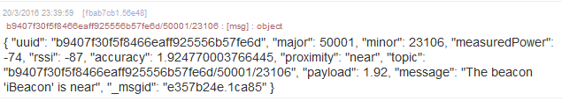
Do not use “accuracy” property which seems inapropriate
Trigger events
The distance value in the payload can be used to trigger events.
Use a switch node and add a conditionabout the distance of the beacon:
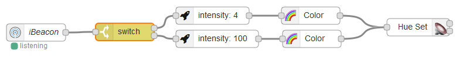
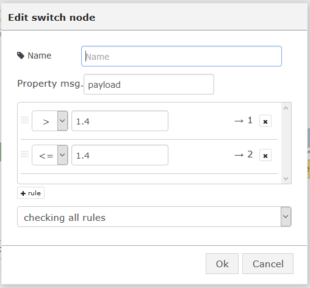
and use it to trigger a light when the cat comes near its food!